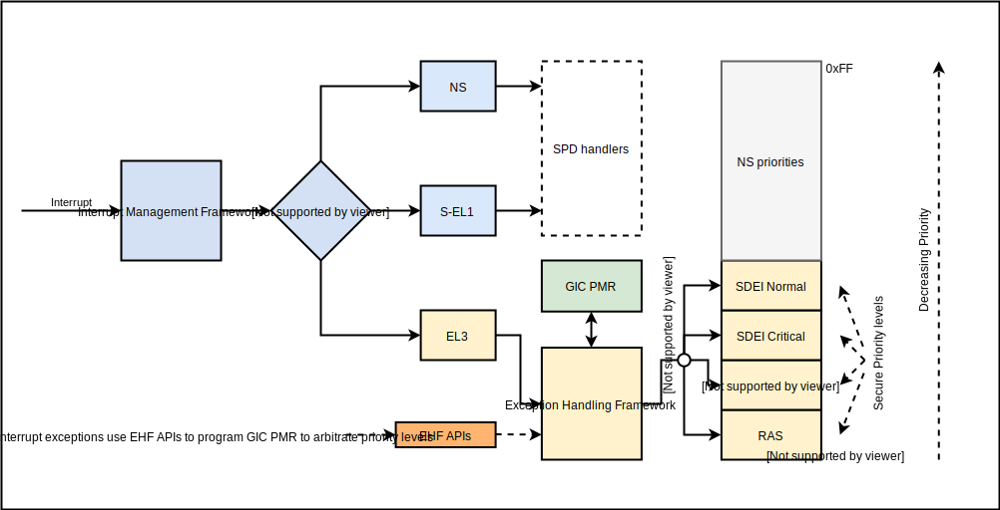

4. Exception Handling Framework¶
This document describes various aspects of handling exceptions by Runtime Firmware (BL31) that are targeted at EL3, other than SMCs. The EHF takes care of the following exceptions when targeted at EL3:
Interrupts
Synchronous External Aborts
Asynchronous External Aborts
TF-A’s handling of synchronous SMC exceptions raised from lower ELs is
described in the Firmware Design document. However, the
EHF changes the semantics of Interrupt handling and synchronous
exceptions other than SMCs.
The EHF is selected by setting the build option EL3_EXCEPTION_HANDLING to
1, and is only available for AArch64 systems.
4.1. Introduction¶
Through various control bits in the SCR_EL3 register, the Arm architecture
allows for asynchronous exceptions to be routed to EL3. As described in the
Interrupt Management Framework document, depending on the chosen
interrupt routing model, TF-A appropriately sets the FIQ and IRQ bits of
SCR_EL3 register to effect this routing. For most use cases, other than for
the purpose of facilitating context switch between Normal and Secure worlds,
FIQs and IRQs routed to EL3 are not required to be handled in EL3.
However, the evolving system and standards landscape demands that various exceptions are targeted at and handled in EL3. For instance:
Starting with ARMv8.2 architecture extension, many RAS features have been introduced to the Arm architecture. With RAS features implemented, various components of the system may use one of the asynchronous exceptions to signal error conditions to PEs. These error conditions are of critical nature, and it’s imperative that corrective or remedial actions are taken at the earliest opportunity. Therefore, a Firmware-first Handling approach is generally followed in response to RAS events in the system.
The Arm SDEI specification defines interfaces through which Normal world interacts with the Runtime Firmware in order to request notification of system events. The SDEI specification requires that these events are notified even when the Normal world executes with the exceptions masked. This too implies that firmware-first handling is required, where the events are first received by the EL3 firmware, and then dispatched to Normal world through purely software mechanism.
For TF-A, firmware-first handling means that asynchronous exceptions are suitably routed to EL3, and the Runtime Firmware (BL31) is extended to include software components that are capable of handling those exceptions that target EL3. These components—referred to as dispatchers 1 in general—may choose to:
Receive and handle exceptions entirely in EL3, meaning the exceptions handling terminates in EL3.
Receive exceptions, but handle part of the exception in EL3, and delegate the rest of the handling to a dedicated software stack running at lower Secure ELs. In this scheme, the handling spans various secure ELs.
Receive exceptions, but handle part of the exception in EL3, and delegate processing of the error to dedicated software stack running at lower secure ELs (as above); additionally, the Normal world may also be required to participate in the handling, or be notified of such events (for example, as an SDEI event). In this scheme, exception handling potentially and maximally spans all ELs in both Secure and Normal worlds.
On any given system, all of the above handling models may be employed independently depending on platform choice and the nature of the exception received.
- 1
Not to be confused with Secure Payload Dispatcher, which is an EL3 component that operates in EL3 on behalf of Secure OS.
4.2. The role of Exception Handling Framework¶
Corollary to the use cases cited above, the primary role of the EHF is to facilitate firmware-first handling of exceptions on Arm systems. The EHF thus enables multiple exception dispatchers in runtime firmware to co-exist, register for, and handle exceptions targeted at EL3. This section outlines the basics, and the rest of this document expands the various aspects of the EHF.
In order to arbitrate exception handling among dispatchers, the EHF operation is based on a priority scheme. This priority scheme is closely tied to how the Arm GIC architecture defines it, although it’s applied to non-interrupt exceptions too (SErrors, for example).
The platform is required to partition the Secure priority space into priority levels as applicable for the Secure software stack. It then assigns the dispatchers to one or more priority levels. The dispatchers then register handlers for the priority levels at runtime. A dispatcher can register handlers for more than one priority level.
A priority level is active when a handler at that priority level is currently executing in EL3, or has delegated the execution to a lower EL. For interrupts, this is implicit when an interrupt is targeted and acknowledged at EL3, and the priority of the acknowledged interrupt is used to match its registered handler. The priority level is likewise implicitly deactivated when the interrupt handling concludes by EOIing the interrupt.
Non-interrupt exceptions (SErrors, for example) don’t have a notion of priority. In order for the priority arbitration to work, the EHF provides APIs in order for these non-interrupt exceptions to assume a priority, and to interwork with interrupts. Dispatchers handling such exceptions must therefore explicitly activate and deactivate the respective priority level as and when they’re handled or delegated.
Because priority activation and deactivation for interrupt handling is implicit and involves GIC priority masking, it’s impossible for a lower priority interrupt to preempt a higher priority one. By extension, this means that a lower priority dispatcher cannot preempt a higher-priority one. Priority activation and deactivation for non-interrupt exceptions, however, has to be explicit. The EHF therefore disallows for lower priority level to be activated whilst a higher priority level is active, and would result in a panic. Likewise, a panic would result if it’s attempted to deactivate a lower priority level when a higher priority level is active.
In essence, priority level activation and deactivation conceptually works like a stack—priority levels stack up in strictly increasing fashion, and need to be unstacked in strictly the reverse order. For interrupts, the GIC ensures this is the case; for non-interrupts, the EHF monitors and asserts this. See Transition of priority levels.
4.3. Interrupt handling¶
The EHF is a client of Interrupt Management Framework, and registers the top-level handler for interrupts that target EL3, as described in the Interrupt Management Framework document. This has the following implications:
On GICv3 systems, when executing in S-EL1, pending Non-secure interrupts of sufficient priority are signalled as FIQs, and therefore will be routed to EL3. As a result, S-EL1 software cannot expect to handle Non-secure interrupts at S-EL1. Essentially, this deprecates the routing mode described as CSS=0, TEL3=0.
In order for S-EL1 software to handle Non-secure interrupts while having EHF enabled, the dispatcher must adopt a model where Non-secure interrupts are received at EL3, but are then synchronously handled over to S-EL1.
On GICv2 systems, it’s required that the build option
GICV2_G0_FOR_EL3is set to1so that Group 0 interrupts target EL3.While executing in Secure world, EHF sets GIC Priority Mask Register to the lowest Secure priority. This means that no Non-secure interrupts can preempt Secure execution. See Effect on SMC calls for more details.
As mentioned above, with EHF, the platform is required to partition Group 0 interrupts into distinct priority levels. A dispatcher that chooses to receive interrupts can then own one or more priority levels, and register interrupt handlers for them. A given priority level can be assigned to only one handler. A dispatcher may register more than one priority level.
Dispatchers are assigned interrupt priority levels in two steps:
4.3.1. Partitioning priority levels¶
Interrupts are associated to dispatchers by way of grouping and assigning interrupts to a priority level. In other words, all interrupts that are to target a particular dispatcher should fall in a particular priority level. For priority assignment:
Of the 8 bits of priority that Arm GIC architecture permits, bit 7 must be 0 (secure space).
Depending on the number of dispatchers to support, the platform must choose to use the top n of the 7 remaining bits to identify and assign interrupts to individual dispatchers. Choosing n bits supports up to 2n distinct dispatchers. For example, by choosing 2 additional bits (i.e., bits 6 and 5), the platform can partition into 4 secure priority ranges:
0x0,0x20,0x40, and0x60. See Interrupt handling example.
Note
The Arm GIC architecture requires that a GIC implementation that supports two
security states must implement at least 32 priority levels; i.e., at least 5
upper bits of the 8 bits are writeable. In the scheme described above, when
choosing n bits for priority range assignment, the platform must ensure
that at least n+1 top bits of GIC priority are writeable.
The priority thus assigned to an interrupt is also used to determine the
priority of delegated execution in lower ELs. Delegated execution in lower EL is
associated with a priority level chosen with ehf_activate_priority() API
(described later). The chosen priority level also determines the interrupts
masked while executing in a lower EL, therefore controls preemption of delegated
execution.
The platform expresses the chosen priority levels by declaring an array of
priority level descriptors. Each entry in the array is of type
ehf_pri_desc_t, and declares a priority level, and shall be populated by the
EHF_PRI_DESC() macro.
Warning
The macro EHF_PRI_DESC() installs the descriptors in the array at a
computed index, and not necessarily where the macro is placed in the array.
The size of the array might therefore be larger than what it appears to be.
The ARRAY_SIZE() macro therefore should be used to determine the size of
array.
Finally, this array of descriptors is exposed to EHF via the
EHF_REGISTER_PRIORITIES() macro.
Refer to the Interrupt handling example for usage. See also: Interrupt Prioritisation Considerations.
4.3.2. Programming priority¶
The text in Partitioning priority levels only describes how the platform expresses the required levels of priority. It however doesn’t choose interrupts nor program the required priority in GIC.
The Firmware Design guide explains methods for configuring secure interrupts. EHF requires the platform to enumerate interrupt properties (as opposed to just numbers) of Secure interrupts. The priority of secure interrupts must match that as determined in the Partitioning priority levels section above.
See Limitations, and also refer to Interrupt handling example for illustration.
4.4. Registering handler¶
Dispatchers register handlers for their priority levels through the following API:
int ehf_register_priority_handler(int pri, ehf_handler_t handler)
The API takes two arguments:
The priority level for which the handler is being registered;
The handler to be registered. The handler must be aligned to 4 bytes.
If a dispatcher owns more than one priority levels, it has to call the API for each of them.
The API will succeed, and return 0, only if:
There exists a descriptor with the priority level requested.
There are no handlers already registered by a previous call to the API.
Otherwise, the API returns -1.
The interrupt handler should have the following signature:
typedef int (*ehf_handler_t)(uint32_t intr_raw, uint32_t flags, void *handle,
void *cookie);
The parameters are as obtained from the top-level EL3 interrupt handler.
The SDEI dispatcher, for
example, expects the platform to allocate two different priority levels—
PLAT_SDEI_CRITICAL_PRI, and PLAT_SDEI_NORMAL_PRI —and registers the
same handler to handle both levels.
4.5. Interrupt handling example¶
The following annotated snippet demonstrates how a platform might choose to assign interrupts to fictitious dispatchers:
#include <common/interrupt_props.h>
#include <drivers/arm/gic_common.h>
#include <exception_mgmt.h>
...
/*
* This platform uses 2 bits for interrupt association. In total, 3 upper
* bits are in use.
*
* 7 6 5 3 0
* .-.-.-.----------.
* |0|b|b| ..0.. |
* '-'-'-'----------'
*/
#define PLAT_PRI_BITS 2
/* Priorities for individual dispatchers */
#define DISP0_PRIO 0x00 /* Not used */
#define DISP1_PRIO 0x20
#define DISP2_PRIO 0x40
#define DISP3_PRIO 0x60
/* Install priority level descriptors for each dispatcher */
ehf_pri_desc_t plat_exceptions[] = {
EHF_PRI_DESC(PLAT_PRI_BITS, DISP1_PRIO),
EHF_PRI_DESC(PLAT_PRI_BITS, DISP2_PRIO),
EHF_PRI_DESC(PLAT_PRI_BITS, DISP3_PRIO),
};
/* Expose priority descriptors to Exception Handling Framework */
EHF_REGISTER_PRIORITIES(plat_exceptions, ARRAY_SIZE(plat_exceptions),
PLAT_PRI_BITS);
...
/* List interrupt properties for GIC driver. All interrupts target EL3 */
const interrupt_prop_t plat_interrupts[] = {
/* Dispatcher 1 owns interrupts d1_0 and d1_1, so assigns priority DISP1_PRIO */
INTR_PROP_DESC(d1_0, DISP1_PRIO, INTR_TYPE_EL3, GIC_INTR_CFG_LEVEL),
INTR_PROP_DESC(d1_1, DISP1_PRIO, INTR_TYPE_EL3, GIC_INTR_CFG_LEVEL),
/* Dispatcher 2 owns interrupts d2_0 and d2_1, so assigns priority DISP2_PRIO */
INTR_PROP_DESC(d2_0, DISP2_PRIO, INTR_TYPE_EL3, GIC_INTR_CFG_LEVEL),
INTR_PROP_DESC(d2_1, DISP2_PRIO, INTR_TYPE_EL3, GIC_INTR_CFG_LEVEL),
/* Dispatcher 3 owns interrupts d3_0 and d3_1, so assigns priority DISP3_PRIO */
INTR_PROP_DESC(d3_0, DISP3_PRIO, INTR_TYPE_EL3, GIC_INTR_CFG_LEVEL),
INTR_PROP_DESC(d3_1, DISP3_PRIO, INTR_TYPE_EL3, GIC_INTR_CFG_LEVEL),
};
...
/* Dispatcher 1 registers its handler */
ehf_register_priority_handler(DISP1_PRIO, disp1_handler);
/* Dispatcher 2 registers its handler */
ehf_register_priority_handler(DISP2_PRIO, disp2_handler);
/* Dispatcher 3 registers its handler */
ehf_register_priority_handler(DISP3_PRIO, disp3_handler);
...
See also the Build-time flow and the Run-time flow.
4.6. Activating and Deactivating priorities¶
A priority level is said to be active when an exception of that priority is
being handled: for interrupts, this is implied when the interrupt is
acknowledged; for non-interrupt exceptions, such as SErrors or SDEI
explicit dispatches, this has to be done via
calling ehf_activate_priority(). See Run-time flow.
Conversely, when the dispatcher has reached a logical resolution for the cause
of the exception, the corresponding priority level ought to be deactivated. As
above, for interrupts, this is implied when the interrupt is EOId in the GIC;
for other exceptions, this has to be done via calling
ehf_deactivate_priority().
Thanks to different provisions for exception delegation, there are potentially more than one work flow for deactivation:
The dispatcher has addressed the cause of the exception, and decided to take no further action. In this case, the dispatcher’s handler deactivates the priority level before returning to the EHF. Runtime firmware, upon exit through an
ERET, resumes execution before the interrupt occurred.The dispatcher has to delegate the execution to lower ELs, and the cause of the exception can be considered resolved only when the lower EL returns signals complete (via an
SMC) at a future point in time. The following sequence ensues:The dispatcher calls
setjmp()to setup a jump point, and arranges to enter a lower EL upon the nextERET.Through the ensuing
ERETfrom runtime firmware, execution is delegated to a lower EL.The lower EL completes its execution, and signals completion via an
SMC.The
SMCis handled by the same dispatcher that handled the exception previously. Noticing the conclusion of exception handling, the dispatcher doeslongjmp()to resume beyond the previous jump point.
As mentioned above, the EHF provides the following APIs for activating and deactivating interrupt:
ehf_activate_priority()activates the supplied priority level, but only if the current active priority is higher than the given one; otherwise panics. Also, to prevent interruption by physical interrupts of lower priority, the EHF programs the Priority Mask Register corresponding to the PE to the priority being activated. Dispatchers typically only need to call this when handling exceptions other than interrupts, and it needs to delegate execution to a lower EL at a desired priority level.ehf_deactivate_priority()deactivates a given priority, but only if the current active priority is equal to the given one; otherwise panics. EHF also restores the Priority Mask Register corresponding to the PE to the priority before the call toehf_activate_priority(). Dispatchers typically only need to call this after handling exceptions other than interrupts.
The calling of APIs are subject to allowed transitions. See also the Run-time flow.
4.7. Transition of priority levels¶
The EHF APIs ehf_activate_priority() and ehf_deactivate_priority() can
be called to transition the current priority level on a PE. A given sequence of
calls to these APIs are subject to the following conditions:
For activation, the EHF only allows for the priority to increase (i.e. numeric value decreases);
For deactivation, the EHF only allows for the priority to decrease (i.e. numeric value increases). Additionally, the priority being deactivated is required to be the current priority.
If these are violated, a panic will result.
4.8. Effect on SMC calls¶
In general, Secure execution is regarded as more important than Non-secure
execution. As discussed elsewhere in this document, EL3 execution, and any
delegated execution thereafter, has the effect of raising GIC’s priority
mask—either implicitly by acknowledging Secure interrupts, or when dispatchers
call ehf_activate_priority(). As a result, Non-secure interrupts cannot
preempt any Secure execution.
SMCs from Non-secure world are synchronous exceptions, and are mechanisms for Non-secure world to request Secure services. They’re broadly classified as Fast or Yielding (see SMCCC).
Fast SMCs are atomic from the caller’s point of view. I.e., they return to the caller only when the Secure world has finished serving the request. Any Non-secure interrupts that become pending meanwhile cannot preempt Secure execution.
Yielding SMCs carry the semantics of a preemptible, lower-priority request. A pending Non-secure interrupt can preempt Secure execution handling a Yielding SMC. I.e., the caller might observe a Yielding SMC returning when either:
Secure world completes the request, and the caller would find
SMC_OKas the return code.A Non-secure interrupt preempts Secure execution. Non-secure interrupt is handled, and Non-secure execution resumes after
SMCinstruction.
The dispatcher handling a Yielding SMC must provide a different return code to the Non-secure caller to distinguish the latter case. This return code, however, is not standardised (unlike
SMC_UNKNOWNorSMC_OK, for example), so will vary across dispatchers that handle the request.
For the latter case above, dispatchers before EHF expect Non-secure interrupts to be taken to S-EL1 2, so would get a chance to populate the designated preempted error code before yielding to Non-secure world.
The introduction of EHF changes the behaviour as described in Interrupt handling.
When EHF is enabled, in order to allow Non-secure interrupts to preempt
Yielding SMC handling, the dispatcher must call ehf_allow_ns_preemption()
API. The API takes one argument, the error code to be returned to the Non-secure
world upon getting preempted.
- 2
In case of GICv2, Non-secure interrupts while in S-EL1 were signalled as IRQs, and in case of GICv3, FIQs.
4.9. Build-time flow¶
Please refer to the figure above.
The build-time flow involves the following steps:
Platform assigns priorities by installing priority level descriptors for individual dispatchers, as described in Partitioning priority levels.
Platform provides interrupt properties to GIC driver, as described in Programming priority.
Dispatcher calling
ehf_register_priority_handler()to register an interrupt handler.
Also refer to the Interrupt handling example.
4.10. Run-time flow¶
The following is an example flow for interrupts:
The GIC driver, during initialization, iterates through the platform-supplied interrupt properties (see Programming priority), and configures the interrupts. This programs the appropriate priority and group (Group 0) on interrupts belonging to different dispatchers.
The EHF, during its initialisation, registers a top-level interrupt handler with the Interrupt Management Framework for EL3 interrupts. This also results in setting the routing bits in
SCR_EL3.When an interrupt belonging to a dispatcher fires, GIC raises an EL3/Group 0 interrupt, and is taken to EL3.
The top-level EL3 interrupt handler executes. The handler acknowledges the interrupt, reads its Running Priority, and from that, determines the dispatcher handler.
The EHF programs the Priority Mask Register of the PE to the priority of the interrupt received.
The EHF marks that priority level active, and jumps to the dispatcher handler.
Once the dispatcher handler finishes its job, it has to immediately deactivate the priority level before returning to the EHF. See deactivation workflows.
The following is an example flow for exceptions that targets EL3 other than interrupt:
The platform provides handlers for the specific kind of exception.
The exception arrives, and the corresponding handler is executed.
The handler calls
ehf_activate_priority()to activate the required priority level. This also has the effect of raising GIC priority mask, thus preventing interrupts of lower priority from preempting the handling. The handler may choose to do the handling entirely in EL3 or delegate to a lower EL.Once exception handling concludes, the handler calls
ehf_deactivate_priority()to deactivate the priority level activated earlier. This also has the effect of lowering GIC priority mask to what it was before.
4.11. Interrupt Prioritisation Considerations¶
The GIC priority scheme, by design, prioritises Secure interrupts over Normal world ones. The platform further assigns relative priorities amongst Secure dispatchers through EHF.
As mentioned in Partitioning priority levels, interrupts targeting distinct dispatchers fall in distinct priority levels. Because they’re routed via the GIC, interrupt delivery to the PE is subject to GIC prioritisation rules. In particular, when an interrupt is being handled by the PE (i.e., the interrupt is in Active state), only interrupts of higher priority are signalled to the PE, even if interrupts of same or lower priority are pending. This has the side effect of one dispatcher being starved of interrupts by virtue of another dispatcher handling its (higher priority) interrupts.
The EHF doesn’t enforce a particular prioritisation policy, but the platform should carefully consider the assignment of priorities to dispatchers integrated into runtime firmware. The platform should sensibly delineate priority to various dispatchers according to their nature. In particular, dispatchers of critical nature (RAS, for example) should be assigned higher priority than others (SDEI, for example); and within SDEI, Critical priority SDEI should be assigned higher priority than Normal ones.
4.12. Limitations¶
The EHF has the following limitations:
Although there could be up to 128 Secure dispatchers supported by the GIC priority scheme, the size of descriptor array exposed with
EHF_REGISTER_PRIORITIES()macro is currently limited to 32. This serves most expected use cases. This may be expanded in the future, should use cases demand so.The platform must ensure that the priority assigned to the dispatcher in the exception descriptor and the programmed priority of interrupts handled by the dispatcher match. The EHF cannot verify that this has been followed.
Copyright (c) 2018-2020, Arm Limited and Contributors. All rights reserved.